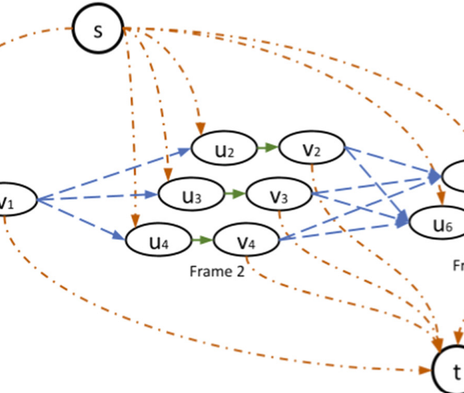
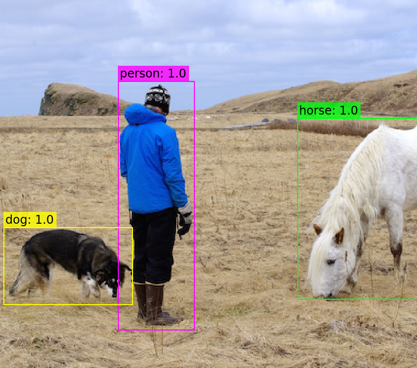
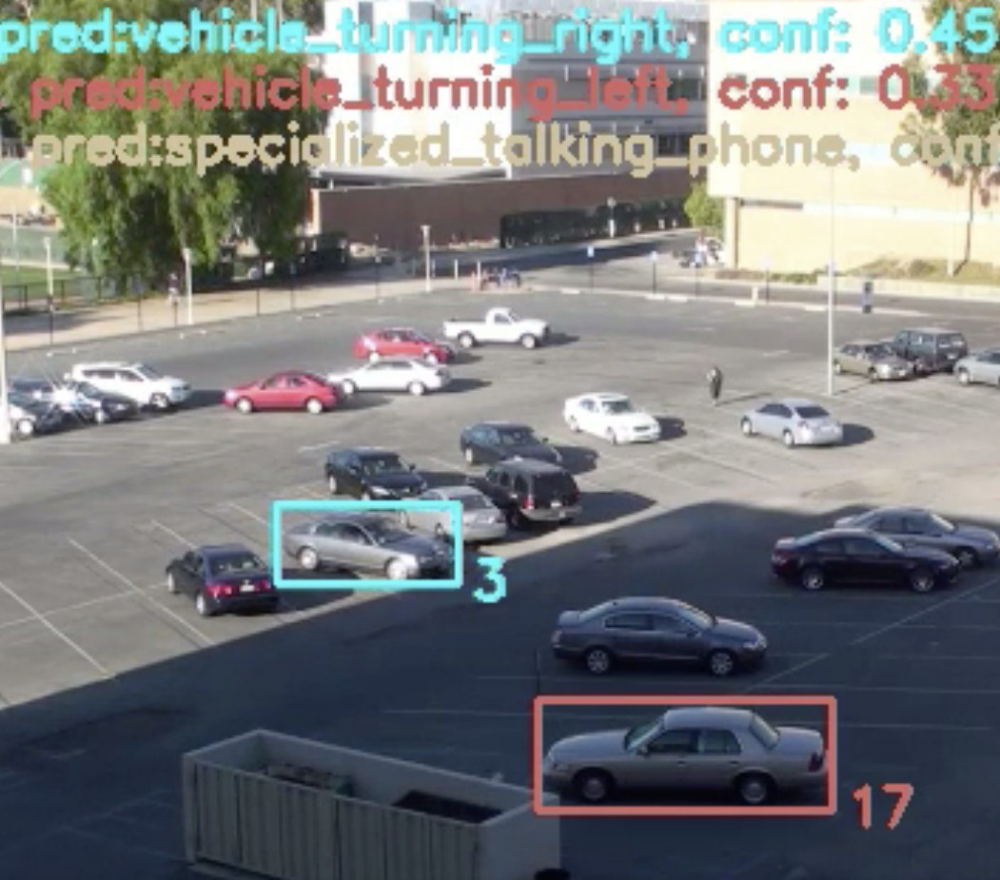
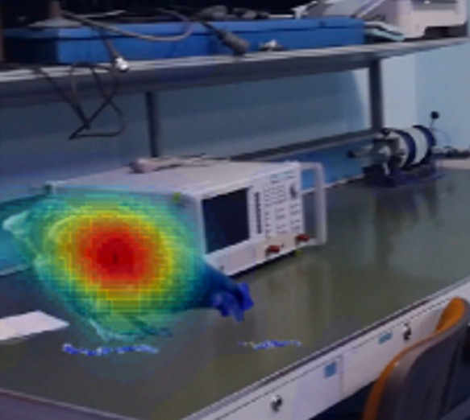

About
I am an AI Research Scientist and Engineer with a cross-disciplinary background in electrical engineering, computer engineering, and artificial intelligence. I hold an MSc in Artificial Intelligence (cum laude) from the University of Amsterdam and an MEng in Electrical & Computer Engineering from Aristotle University of Thessaloniki.
My research focuses on computer vision, with emphasis on representation learning (disentanglement, object-centric methods) and generative techniques, including diffusion models and VAEs.
Publications
For the full publication list, please see my Google Scholar profile.
-
Touska, D., Gkountakos, K., Ioannidis, K., Tsikrika, T., Vrochidis, S., Kompatsiaris, I.
Graph-Based Data Association in Multiple Object Tracking: A Survey
MMM 2023. [paper] -
Gkountakos, K., Touska, D., Ioannidis, K., Tsikrika, T., Vrochidis, S., Kompatsiaris, I.
Spatio-temporal activity detection and recognition in untrimmed surveillance videos
ICMR 2021. [paper] -
Gkountakos, K., Galanopoulos, D., Touska, D., Ioannidis, K., Vrochidis, S., Mezaris, V., Kompatsiaris, I.
ITI-CERTH participation in ActEV and AVS Tracks of TRECVID 2021
TRECVID 2021. [paper] -
Zampoglou, M., Markatopoulou, F., Mercier, G., Touska, D., Apostolidis, E., Papadopoulos, S., ... Kompatsiaris, I.
Detecting tampered videos with multimedia forensics and deep learning
MMM 2019. [paper]
Education
- MSc in Artificial Intelligence (cum laude) – University of Amsterdam, Netherlands. (September 2023 -
June 2025)
- (July 2023) Awarded the Qualcomm Diversity in AI Fellowship.
- MEng in Electrical and Computer Engineering – Aristotle University of Thessaloniki, Greece. (September 2013 - June 2019)
Employment
- ASML, Eindhoven, Netherlands.
- (September 2024 - May 2025) Full-time AI research scientist intern.
- University of Amsterdam (UvA), Amsterdam, Netherlands.
- (June 2025) Full-time teaching assistant.
- (February 2024 - September 2024) Part-time AI research scientist and engineer.
- Centre for Research and Technology Hellas (CERTH), Thessaloniki, Greece.
- (September 2020 - July 2023) Full-time AI research scientist and engineer.
- (March 2018 - May 2018) Full-time AI research scientist intern.
- Instituto Superior de Engenharia do Porto (ISEP), Porto, Portugal.
- (September 2019 - February 2020) Erasmus+ AI research scientist and engineer.
Hosted on GitHub Pages — Original theme by orderedlist